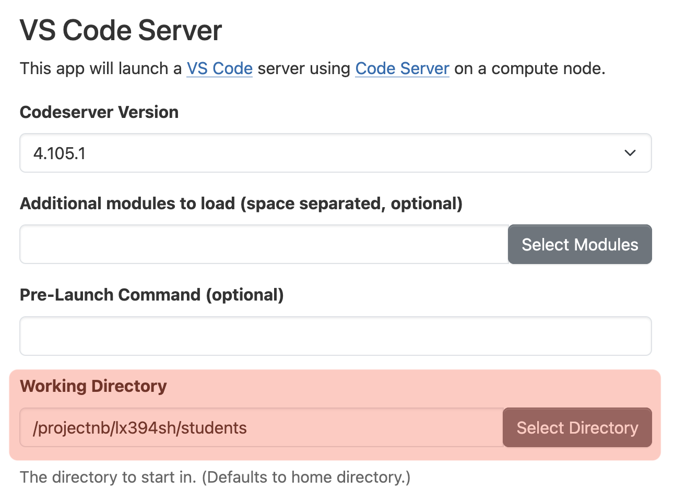
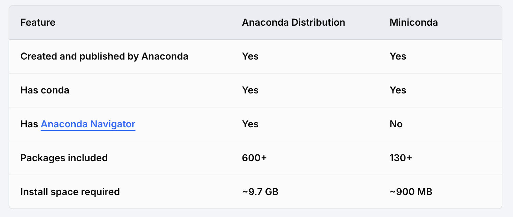
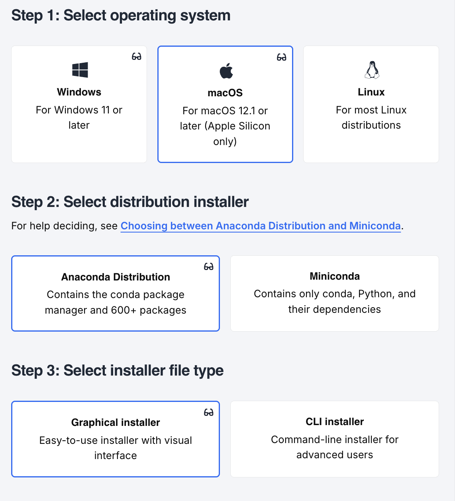
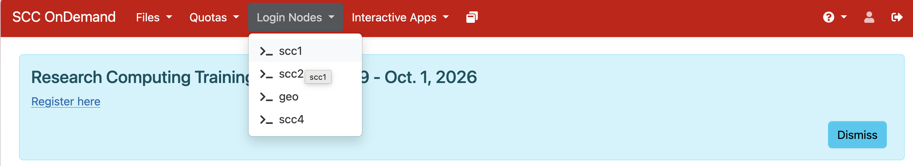
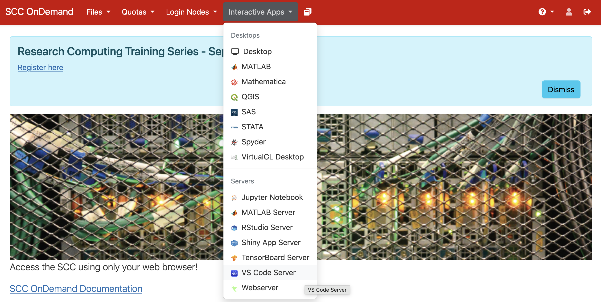

Getting Started
Lab 01
1 Today
- Introductions & Logistics
- How to Use Python
- Python on the SCC
- Python in the Command Line
- Installing Python through miniconda
2 Introductions & Logistics
Email: romihill@bu.edu
Background:
- 3rd PhD student in the Linguistics department
- Primary interests in morphosyntax/morphophonology
- BA in Linguistics and Mathematics
- MA in Speech and Language Processing (Machine Language Track)
- Employed as a Computational Linguist at Appen (company which develops linguistic datasets for AI/NLP tasks). Happy to talk about this experience if you have questions!
Structure of Lab Section:
- Hands on practice, interactive
- All lab materials will be published on this website. Always refer to Sophie’s Syllabus/Lectures/Announcements for anything related to homework and content (i.e. anything important)
- Designed to help you with understanding content from the lectures
- Please email me/approach me if there’s anything you would like to focus on!
- Interrupt me at any moment if there’s anything that’s unclear/uncertain
Office Hours
- Mondays 3:45pm - 4:45pm, Room 138M, 111 Cummington Mall
- Sophie’s hours: Th 11:00–12:00, Room 138S, 111 Cummington Mall
- Here to address any questions or problems you are stuck on
- You can come with questions from the assignments, and I can give you hints/point you in the next direction
3 How to Use Python
To write/run Python, we need:
- A Python interpreter, which reads the Python code you have written
- Can be installed through e.g. python.org, a “distribution” like miniconda
- A Code Editor, also known as an Integrated Development Environment or IDE
- Popular examples include Visual Studio Code, Spyder, PyCharm
4 Installing Python with Miniconda

By the end of today, we will hopefully be able to run Python “locally” on your computer
This means you have Python installed on your computer
You can use Python interactively through the command line on your computer
The code runs on your own CPU/resources, and it reads/writes any files which are on your computer. This means you can use it without the internet and don’t need to rely on BU’s servers/your internet connection/etc
We will install Python using “Anaconda”, and use VSCode as an IDE
4.1 Introducing Anaconda
Distribution
A pre-packaged bundle of software that includes the Python interpreter, the standard library, and a variety of additional tools, packages, or utilities
Designed to make installing and using Python easier
Anaconda
A popular open-source Python distribution
Includes conda (package and environment manager), a vast collection of pre-installed scientific computing packages and the Anaconda Navigator
Can download the full distribution or “miniconda”

4.2 Instructions
- Download Anaconda/Miniconda here: Getting Started with Anaconda
4.2.1 Our Recommendation (need at least 10GB of Space)
Our strong recommendation is to install the full Anaconda Distribution, if you have the space.
It will be the easiest to manage, because there is an interface you can use with the “Anaconda Navigator”
Choose the following settings, and follow these instructions: Instruction: Install Python and Related Software

4.2.2 If you don’t have 10GB of free space…
We need to install miniconda, which is a lightweight version of Anaconda
- Unlike the full distribution, miniconda does not come with Jupyter Notebook, an IDE, or most extra packages pre-installed. We have to install those ourselves.
4.2.2.1 Step 1: Install Miniconda
Go to Miniconda Installer and download the installer for macOS
- If you’re not sure whether your Mac has an Apple Silicon (M1/M2/M3/M4) or Intel chip, check the Apple menu > About This Mac
Open the downloaded
.pkgfile and follow the installer prompts (defaults are fine)Open Terminal (search for it with Spotlight, Cmd + Space) and type:
conda --version- If you see a version number printed, the install worked!
Go to Miniconda Installer and download the 64-bit installer for Windows
Run the downloaded
.exefile- When prompted, we recommend selecting “Just Me” (not “All Users”)
- On the Advanced Options screen, it’s okay to leave “Add Miniconda3 to my PATH environment variable” unchecked. Instead, we’ll use the Anaconda Prompt (installed automatically) to run conda commands
Open the Anaconda Prompt from the Start Menu (search “Anaconda Prompt”) — this is the command line you’ll use for the rest of these steps, instead of the regular Command Prompt or PowerShell
In the Anaconda Prompt, type:
conda --version- If you see a version number printed, the install worked!
4.2.2.2 Step 2: Install Jupyter
In your Terminal (macOS) or Anaconda Prompt (Windows), type:
conda install jupyter- Type
yand press Enter when prompted to proceed
- Type
Test that it installed correctly:
jupyter notebook --version
4.2.2.3 Step 3: Install VS Code
- Download VS Code from code.visualstudio.com
- Open the downloaded
.zipfile, then dragVisual Studio Code.appinto your Applications folder - Open VS Code from Applications or Spotlight
- Download VS Code from code.visualstudio.com
- Run the downloaded installer
- On the “Select Additional Tasks” screen, we recommend checking “Add to PATH” — this lets you open VS Code from the Anaconda Prompt by typing
code
- On the “Select Additional Tasks” screen, we recommend checking “Add to PATH” — this lets you open VS Code from the Anaconda Prompt by typing
- Open VS Code once installation finishes
4.2.2.4 Step 4: Set Up VS Code for Python
- Open VS Code, and click the Extensions icon in the left sidebar (it looks like four squares)
- Search for and install:
- Python (published by Microsoft)
- Jupyter (published by Microsoft)
- Open or create a
.ipynb(Jupyter Notebook) in VS Code - In the top-right corner, click “Select Kernel” (for a notebook) or check the bottom-right corner for the Python interpreter (for a script)
- Choose your base conda environment — it should appear in the list as a conda environment
- If you don’t see it, click “Select Another Kernel” > “Python Environments” and look for
base
- You’re ready to go! Try running a simple cell, e.g.
print("hello world"), to confirm everything works
5 Introducing the SCC
- SCC: Shared Computing Cluster
- Connect with another computer, i.e. “server”
- Access through here: https://scc-ondemand1.bu.edu
- We can only interact with the server through the command line
- The server has a file system, and we can upload files to it
- This is a good backup to get Python running on your computer if the installation doesn’t work. This is also how you access BU’s powerful computers, so you will become familiar with it if you continue on with computational linguistics.
5.1 Demo: Let’s access the SCC! Under log in nodes, choose “_scc1”

- You can interact with the command line with the following
bashcommands. There are many others! It’s a powerful way to interact with your computer.
| Command | What it does | Example |
|---|---|---|
cd |
Changes directory | cd /projectnb/lx394sh/username |
ls |
List contents of directory |
|
pwd |
Print working directory | pwd |
mkdir |
Create a directory in current location | mkdir my_dir_name |
- Let’s navigate to your student folders in the SCC!
- You can use Python in the terminal as an “interactive interpreter”.
5.2 Demo: Using Python on the SCC!
We will use the VSCode server to access Python
Go back to https://scc-ondemand1.bu.edu, and click “interactive apps”, and “VS Code Server”

- From here, it is important that you you change the
working directorytoprojectnblx394sh/students/your_username. Leave everything else the same.
- This is a good back up if you want to use Python, but haven’t set it up locally yet